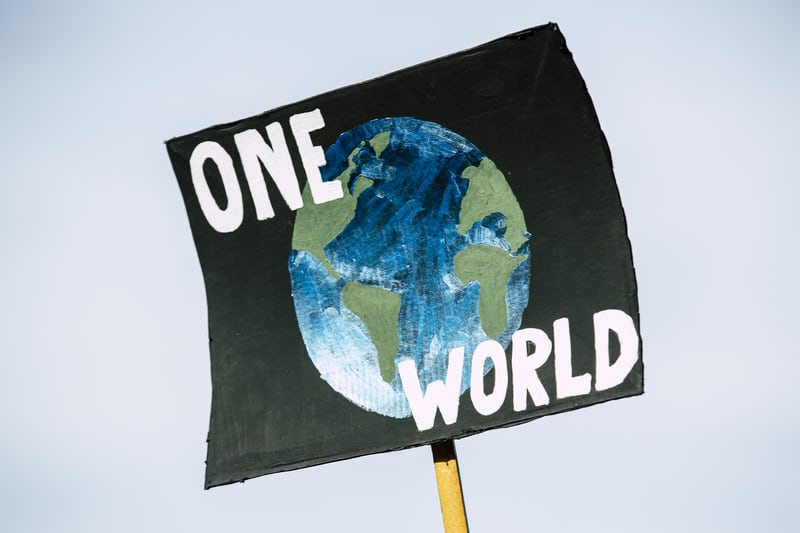

문재인 대통령은 31일 "화석연료에 의존할 수밖에 없는 개발도상국에게는 탄소중립의 길이 매우 어렵다. 선진국들이 지원을 늘려 개발도상국의 부담을 함께 나눠야 한다"고 밝혔다.
문 대통령은 '2021 P4G 서울 녹색미래 정상회의' 이틀째인 이날 정상 토론세션에서 "선진국과 개발도상국이 서로 다른 경제·사회적 여건을 이해하며 기후 문제에 연대해 나가는 것이 매우 중요하다"며 이같이 말했다. 문 대통령은 "한국은 선진국과 개발도상국을 연결하는 가교역할을 할 것"이라며 기후기술센터네트워크 협력사무소 및 녹색기술센터를 통한 개도국의 친환경 기술 확보 지원, 기후 분야 ODA(공적개발원조) 확대 등을 약속했다.
또 문 대통령은 "온실가스 감축은 해운과 선박에서도 이뤄져야 한다"며 "친환경 해운·선박이 강화돼야 한다"고 말했다. 나아가 해양쓰레기 관리를 위한 한국의 노력을 소개하면서 "유엔 차원의 해양플라스틱 대응 논의를 다시 한번 촉구한다"고 했다. 아울러 문 대통령은 "한국은 그린뉴딜을 국가 역점 사업으로 추진하고 2025년까지 650억 달러 규모의 재정을 투입하려고 한다"며 "민간의 참여를 이끌고 혁신 노력을 뒷받침하는 데 정책의 주안점을 두고 있다"고 밝혔다.